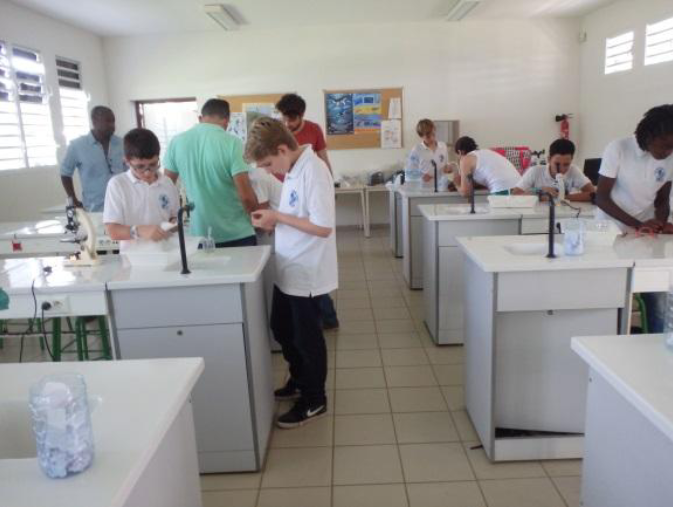

Participation à Cgénial, un concours scientifique national pour collégiens et lycéens qui
permet de présenter un projet didactique et innovant dans de nombreuses disciplines scientifiques
En Guadeloupe, les plages sont peuplés par des sargasses, une variété d'algues qui vient s'échouer sur les plages une fois leur vie terminée.
Ces algues ont la particularité de dégager une odeur très désagréable lors de leur putréfaction. C'est la qu'est né le projet "Les dons de la mer"
qui avait pour but de trouver une utilité à ses sargasses pour pouvoir dégager les plages tout en recyclant les algues.
Nous avons testés plusieurs expériences pour justement trouver quoi faire des sargasses. Le projet a fini par avoir des résultats prometteurs et
nous avons fini par remporter le 2ème prix lors de la finale nationale à Paris.
Plus d'infos ici

Une photo des expérimentations !